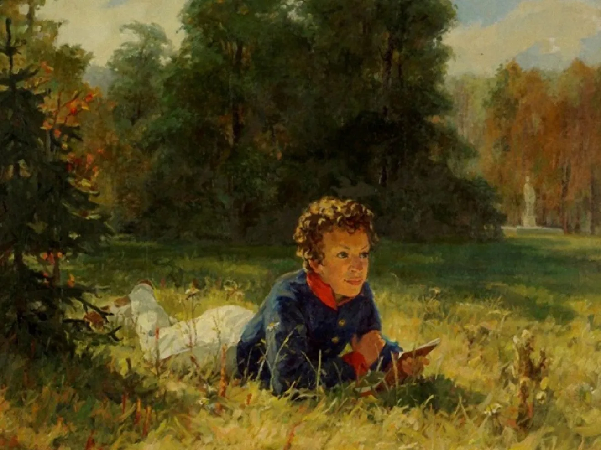
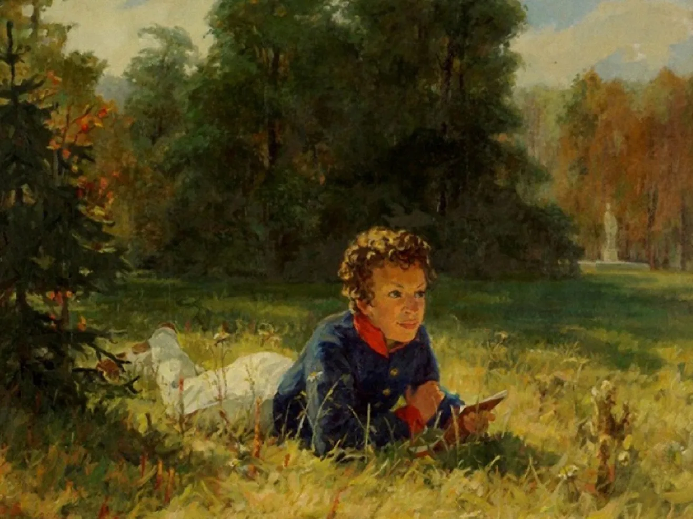

Александр Пушкин начал писать свои первые произведения уже в семь лет. В годы учебы в Лицее он прославился, когда прочитал свое стихотворение Гавриилу Державину. Пушкин первым из русских писателей начал зарабатывать литературным трудом. Он создавал не только лирические стихи, но и сказки, историческую прозу и произведения в поддержку революционеров — за вольнодумство поэта даже отправляли в ссылки. Александр Пушкин родился в обедневшей дворянской семье 6 июня 1799 года. В раннем детстве он был молчаливым и малоподвижным ребенком — старшая сестра Ольга вспоминала, что до шести лет мальчик «был просто увалень». Начальное образование Пушкин получил дома. Воспитание его ничем не отличалось от общепринятой тогда в дворянских семьях системы: родители нанимали ему гувернеров и учителей из Франции, Германии, Англии, России.
 


Александр Пушкин родился в обедневшей дворянской семье 6 июня 1799 года. В раннем детстве он был молчаливым и малоподвижным ребенком — старшая сестра Ольга вспоминала, что до шести лет мальчик «был просто увалень». Начальное образование Пушкин получил дома. Воспитание его ничем не отличалось от общепринятой тогда в дворянских семьях системы: родители нанимали ему гувернеров и учителей из Франции, Германии, Англии, России.
Учеба давалась Пушкину тяжело, а преподаватели отмечали, что он не прилежен. Однако вскоре мальчик увлекся чтением. «Проводил бессонные ночи и тайком в кабинете отца пожирал книги одну за другой», — вспоминал позже его младший брат Лев.
Не знаю, что выйдет из моего старшего внука. Мальчик умен и охотник до книжек, а учится плохо, редко когда урок свой сдаст порядком; то его не расшевелишь, не прогонишь играть с детьми, то вдруг так развернется и расходится, что ничем его не уймешь: из одной крайности в другую бросается, нет у него середины.
Мария Ганнибал
«Француз» в Царскосельском лицее
В 1811 году родители Пушкина решили отдать сына в Иезуитский коллегиум, но их планы изменились, когда в Царском Селе открылся лицей для дворянских детей. По протекции друзей Пушкины устроили 12-летнего сына в элитное заведение. Изначально здесь собирались готовить детей из императорской семьи и их сверстников к высшим гражданским чинам. Но статус Лицея понизился: Пушкин учился в привилегированном и закрытом учреждении, но среди равных себе детей из обедневших фамилий. В стенах Лицея многие крепко сдружились. Три товарища — Иван Пущин, Антон Дельвиг, Вильгельм Кюхельбекер — остались друзьями Пушкина на всю жизнь. В Лицее преподавали известный юрист Александр Куницын, философ Александр Галич, филолог Николай Кошанский. Именно профессора в большей степени влияли на интеллектуальное и нравственное становление лицеистов — родные могли навещать своих детей только по выходным. В будние дни занятия начинались в семь утра и продолжались до позднего вечера. В годы учебы Александр Пушкин воспринимал альма-матер как «монастырь» и мечтал о свободе, которая наступит с окончанием Лицея. Учился Пушкин не очень хорошо, особенно тяжело юному писателю давались логика и математика. При блестящей памяти ему недоставало усидчивости и внимания. Однако преподаватели отмечали эрудицию воспитанника. В Лицее он продолжал много читать и писать тексты на французском языке. Лицеист Сергей Комовский вспоминал, что из-за любви к этому языку Пушкина «называли… в насмешку французом, а по физиономии и некоторым привычкам обезьяною и даже смесью обезьяны с тигром». На русском языке Александр Пушкин составлял небольшие эпиграммы и послания, а также намечал структуру будущей автобиографии. Юного автора настолько увлекало литературное творчество, что идеи произведений рождались одна за другой на несколько месяцев вперед: «Вчера написал я третью главу «Фатама, или Разум человеческий». Начал я комедию — не знаю, кончу ли ее. Третьего дня хотел я написать ироическую поэму «Игорь и Ольга». Летом напишу я «Картину Царского Села»». Писал Пушкин и стихотворения. В 1814 году он впервые опубликовал одно из них — «К другу-стихотворцу» — под псевдонимом Александр Н.к.ш.п. в журнале «Вестник Европы». Первый крупный успех ждал Пушкина в 1815 году во время зимнего переводного экзамена — 15-летний лицеист прочитал свое стихотворение «Воспоминания в Царском Селе». На экзамене присутствовал Гавриил Державин, он был потрясен творением юного поэта. Пушкин позже писал: «Не помню, как я кончил свое чтение; не помню, куда убежал. Державин был в восхищении; он меня требовал, хотел меня обнять… Меня искали, но не нашли».
Служба и карьера Пушкина
В 1817 году Александр Пушкин окончил Лицей. По успеваемости он был 24-м из 29 выпускников. Пушкина направили в Коллегию иностранных дел — чиновником X класса. Но там он только числился: государственная служба мало привлекала юношу. После шести лет учебы Пушкин с головой окунулся в светскую жизнь столицы и, как известный и заслуженный автор, попал в общество петербургских писателей. Еще в Лицее он стал членом литературного кружка «Арзамас», который боролся с архаическими языковыми традициями. В 1819 году Пушкин вступил в литературно-театральное общество «Зеленая лампа» при декабристском «Союзе благоденствия». Его участники пропагандировали свободолюбивые идеи. На собраниях читали стихи, обсуждали театральные премьеры, критиковали публицистические статьи. Здесь велись не только светские споры, но и политические беседы. Все это отразилось на творчестве Пушкина: он написал несколько эпиграмм на государственных деятелей того времени, оду «Вольность», стихотворения «К Чаадаеву» и «Деревня».
Южная ссылка
Весной 1820 года Александр Пушкин отправился в Кишинев, в канцелярию главного попечителя колонистов Южного края. По пути к новому месту службы поэт сильно заболел. Чтобы поправить здоровье, Пушкин поехал сначала на Кавказ, затем — в Крым. Путевые впечатления от юга империи позже отразились в некоторых его произведениях. Наконец, в сентябре 1820 года Пушкин прибыл в Кишинев.
Новый начальник генерал-лейтенант Иван Инзов относился к службе своего подчиненного снисходительно и никаких должностных дел ему не поручал. Своим временем Пушкин распоряжался как хотел: общался с членами «Союза благоденствия», вступил в масонскую ложу «Овидий». В свободные часы он по-прежнему писал. В этот период появились «Кавказский пленник», «Гавриилиада», «Братья-разбойники», «Бахчисарайский фонтан», «Песнь о вещем Олеге». Также Пушкин начал работать над романом в стихах «Евгений Онегин».
Меж тем в Москве в 1824 году полиция вскрыла письмо Пушкина: тот писал Кюхельбекеру об увлечении «атеистическими учениями». За такие высказывания поэту грозила не просто отставка. Пушкина отправили в настоящую ссылку в семейное имение в селе Михайловском Псковской губернии — Юг все-таки выдавали за принудительную командировку. Писателя лишили скромного жалованья, установили надзор, а конец срока наказания никак не обозначили.
александр Пушкин